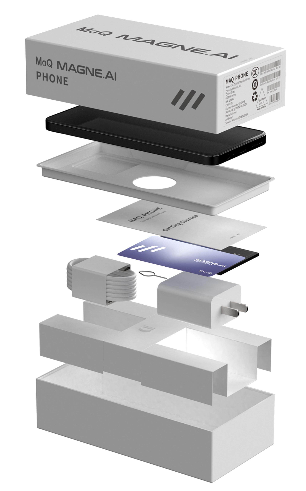

使用者體驗USER EXPERIENCE
Google GeminiDEFAULT ASSISTANT端側翻譯與語音QWEN · ASR · TTSAI 影像ISP · VISION AI錢包與身份WEB3 ENTRY
MAG1 · 3D 技術終端
身份、支付與 AI Agent 在掌心交會。MAG1 把端側 AI、AgentPay、硬件簽章與離線復原放進同一個可被掌握的安全裝置層。
MAG1 SYSTEM STACK
從 Gemini、端側 AI 與 Android 服務，一路落到異構算力、N60 安全元件與真實硬件。每一層都有自己的責任，也有自己的證據邊界。
解剖 · ANATOMY
COMPUTE
5G 應用運算與 10 TOPS INT8 端側 AI 各自就位。智能先在裝置發生，再決定是否需要雲端。
10 TOPSTRUST
可信執行環境隔離敏感運算；獨立安全元件保存密鑰並執行簽章。
EAL6+RECOVERY
復原材料被放進一張可離線保存的實體卡。裝置可以更換，所有權不必一起遺失。
OFFLINE規格 · SPECIFICATION
一台終端的規格表不應只是數字。處理器承擔日常，NPU 承擔本地模型，記憶體承擔持續推論，安全元件承擔不可外包的部分。
「不是手機預算。
是終端預算。」
工程證據 · EVT HARDWARE
拆機取得的 PCBA 元件面與屏蔽面，保留真實板形、連接器、屏蔽罩與焊接細節。它證明硬件已經存在，也清楚標示目前證據屬於 EVT 階段，而非 PVT 樣機。


影像 · AI IMAGING

讓每一個瞬間，都清晰出彩。
MAG1 以 Samsung ISOCELL JN1 5000 萬像素主攝負責高解析採集，再由 UNISOC T9100 的 ISP 與端側運算鏈路處理色彩、HDR、暗光與穩定。影像不只是一組鏡頭，而是一條從感光元件到本地計算的完整路徑。
本頁只描述已由工程資料或實機驗證的能力；視覺搜尋、即時環境理解與 AI Agent 視覺互動不列作目前交付功能。
展開相機與影片規格CAMERA SPECS →抵達 · THE ARRIVAL
裝置、充電與說明，讓產品開始工作；安全元件與 NFC 復原卡，則為所有權保留一條不依賴手機在線的路徑。
可被遺失。
兩個空間 · TWO SPACES
通訊、影像、應用與選擇性雲端 AI，維持完整的日常裝置體驗。
錢包、簽章與敏感資產流程由另一道生物辨識與安全元件守住。
日常智能 · EVERYDAY INTELLIGENCE
Android 15、Google Mobile Services 與 Gemini 體驗服務日常使用；資產、簽章與復原流程則留在隔離的安全空間。
完整 Android 應用環境與官方應用入口。
搜尋、郵件、雲端資料與視訊協作。
導航、瀏覽、影音與娛樂服務。
Google Gemini 雲端 AI 體驗可經系統助手路徑存取；功能可用性取決於地區、Google 帳戶、軟件版本和適用服務條款。Google、Android、Google Play、Gemini 及相關標誌為其各自權利人的商標；本頁不表示 Google 對 MAGNE.AI 的背書、商業合作或聯合開發。